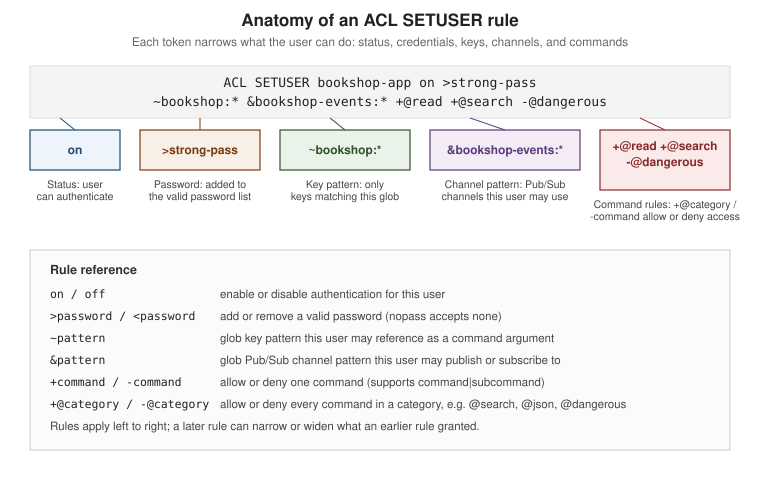

Security
|
This content was generated with the assistance of AI and should be verified against the official documentation before being relied on in production. |
Examples on this page target Redis Open Source 8.10 (8.10.2) with the Jedis 8 and Lettuce 7.7 client
libraries. Redis is designed to be reached only by trusted clients inside a trusted network — everything
below layers on top of that assumption rather than replacing it, and every example continues to use the
bookshop-app naming already established for the Bookshop scenario elsewhere on this site.
Protected mode and bind
By default Redis binds every network interface. If it is started that way with no password configured, it
enters protected mode: it accepts connections only from the loopback interface and replies to any other
client with an error explaining how to fix the configuration, rather than silently exposing the dataset. This
is a safety net, not a substitute for firewalling — an administrator can still disable protected mode or bind
all interfaces deliberately, and a single unauthenticated FLUSHALL from an exposed instance is enough to
delete the whole dataset. The durable fix is to bind only the interfaces Redis actually needs to listen on:
bind 127.0.0.1 10.0.4.12
protected-mode yesSee Redis security.
requirepass vs. ACL users
Redis has two authentication layers. The legacy one, requirepass, sets a single shared password for the
default user and predates fine-grained permissions — every client that knows it can run every command
against every key. The recommended layer, introduced in Redis 6, is the ACL system: named users, each with
its own passwords, key patterns, channel patterns, and command permissions, configured with ACL SETUSER.
requirepass still works and is implemented as setting a password on the default user, so the two are not
mutually exclusive — a deployment typically disables or restricts default and creates a named ACL user per
application instead.
ACL SETUSER username [on\|off] [>password\|nopass] [~keypattern …] [&channelpattern …] [+command\|
+@category\|-command\|-@category …] [reset] builds up a user’s permissions rule by rule, left to right;
repeated calls add to the existing user rather than replacing it (reset clears it first). A bookshop-app
user restricted to the Bookshop keyspace, needing only search and general read/write access, and explicitly
denied the dangerous administrative surface, looks like this:
127.0.0.1:6379> ACL SETUSER bookshop-app on >strong-pass ~bookshop:* &bookshop-events:* +@read +@write +@search -@dangerous
OK
127.0.0.1:6379> ACL LIST
1) "user bookshop-app on #... ~bookshop:* resetchannels &bookshop-events:* -@all +@read +@write +@search -@dangerous"
2) "user default on nopass ~* &* +@all"~bookshop:* is a glob key pattern — the user can only reference keys under that prefix as command
arguments, though a command with no key arguments (FLUSHALL, FLUSHDB) is governed by command rules alone,
not key patterns, so -@dangerous above is what actually keeps bookshop-app from wiping the database.
&bookshop-events:* is the matching channel pattern for Pub/Sub. @read`/`@write grant the ordinary data
commands, and +@search specifically adds the FT.*/query-engine command family — a user also needs a key
pattern covering an index’s declared prefixes to create, alter, or query it, since @search commands are
additionally checked against the index’s own key prefixes. The equivalent category for JSON document commands
is @json. ACL CAT lists every category, and ACL CAT <category> lists the commands inside one.
ACL LOG [count\|RESET] returns recent permission failures (wrong password, denied command, denied key) with
a timestamp, the offending username, and the reason — the first place to look when a client reports NOPERM
or WRONGPASS unexpectedly:
127.0.0.1:6379> ACL LOG 5
1) 1) "count"
2) (integer) 1
3) "reason"
4) "key"
5) "context"
6) "toplevel"
7) "object"
8) "orders:1042"
9) "username"
10) "bookshop-app"
11) "age-seconds"
12) "12.5"
13) "client-info"
14) "..."Users defined with ACL SETUSER live only in memory unless saved. For more than a handful of users, an
external ACL file (aclfile /etc/redis/users.acl, one user … line per user in the same rule syntax) is
easier to version and review than embedding users in redis.conf; ACL LOAD reloads it after a manual edit,
and ACL SAVE writes the current in-memory users back out to it.
See ACL and ACL SETUSER.

TLS
Redis supports TLS on every communication channel — client connections, replication links, and the cluster
bus — as an optional feature that must be compiled in and then explicitly enabled. tls-port opens a TLS
listener in addition to (or, with port 0, instead of) the plain-text port, and a certificate, private key,
and trusted CA bundle must be configured for it to start:
port 0
tls-port 6379
tls-cert-file /etc/redis/tls/redis.crt
tls-key-file /etc/redis/tls/redis.key
tls-ca-cert-file /etc/redis/tls/ca.crt
tls-replication yes
tls-cluster yesBy default Redis requires mutual TLS: a connecting client must present a certificate signed by a trusted CA,
not only verify the server’s — tls-auth-clients no relaxes this to server-only authentication when a
deployment cannot issue per-client certificates. redis-cli authenticates the same way any client does,
supplying its own certificate and key alongside --tls:
$ redis-cli --tls --cert ./bookshop-app.crt --key ./bookshop-app.key --cacert ./ca.crt \
--user bookshop-app --pass strong-pass -h redis.internal -p 6379 PING
PONGRedis 8.6 added certificate-based user authentication: with tls-auth-clients-user set to a certificate
field (for example CN), the value of that field on the client’s certificate is used directly as the ACL
username, so a client authenticated at the TLS layer needs no separate AUTH call — failed attempts surface
in the acl_access_denied_tls_cert metric. Redis 8.10 added TLS peer certificate-based server-to-server
authentication: cluster bus and replication links can now verify the peer’s certificate against the CA the
same way a client connection does, closing the gap where tls-cluster yes encrypted node-to-node traffic
without also authenticating which node was on the other end.
Disabling or renaming dangerous commands
rename-command in redis.conf renames a command to an unguessable string, or to an empty string to disable
it outright — historically used to keep operators-only commands out of reach of application clients on a
shared instance:
rename-command FLUSHALL ""
rename-command KEYS ""
rename-command CONFIG b840fc02d524045429941cc15f59e41cb7be6c52This mechanism is deprecated in favor of ACL rules, since rename-command is a single global setting — it
hides a command from every user equally, whereas -@dangerous (or -flushall, -keys, -config) on a
specific ACL user like bookshop-app restricts only that user and can differ per user. KEYS in particular
scans the whole keyspace and blocks the server while it runs, so it is worth denying to every application user
regardless of method; SCAN is the incremental, non-blocking alternative for the same purpose.
See Redis security.
Network isolation
ACLs and TLS assume the network itself is not the last line of defense. In practice that means: put Redis on a
private subnet with no public IP, allow inbound traffic on port/tls-port only from the application tier’s
security group or firewall rule, and never expose the port directly to the internet even with a password set,
since AUTH and unencrypted requirepass traffic can still be observed by anyone already on the network path.
Container images should use a current base such as redis:8, not an older redis/redis-stack image, since the
module surface (search, JSON, probabilistic, time series) that used to require a separate redis-stack image
ships in Redis 8 itself. Redis Cloud and Redis Software deployments add further isolation options (VPC
peering, private endpoints) on top of the same bind/firewall/TLS model.
See Redis security.
Security checklist
| Area | Checklist item |
|---|---|
Network |
Redis is not bound to a public interface; the port is reachable only from the application tier’s own network or security group. |
Protected mode |
|
Authentication |
|
Authorization |
Each ACL user’s key pattern ( |
Dangerous commands |
|
Transport encryption |
|
Client/peer authentication |
Mutual TLS ( |
Credential storage |
ACL passwords and TLS keys are generated with |
Auditing |
|
References
-
Redis security — security model, network security, protected mode, and disabling commands.
-
ACL —
ACL SETUSERrule syntax, command categories, selectors, and the external ACL file. -
TLS — certificate configuration,
tls-port, and mutual TLS. -
Redis Open Source 8.6 release notes — TLS certificate-based automatic client authentication.
-
Redis Open Source 8.10 release notes — TLS peer certificate-based server-to-server authentication.